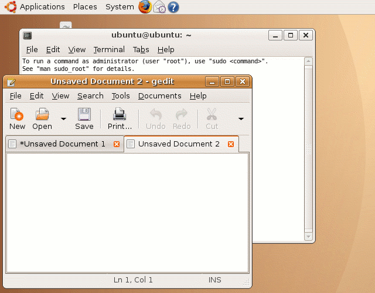
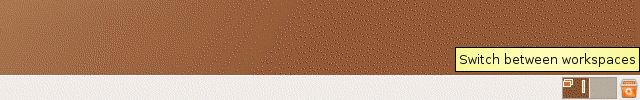
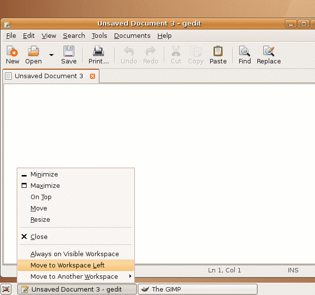
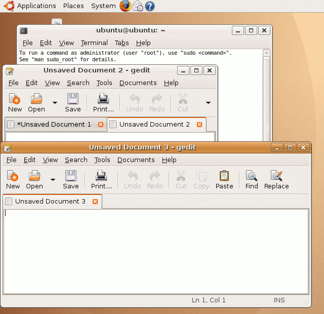

| vlsitechnology.org /Live CD help /Gedit instances | |
Gedit multiple instances problem | |
Linux help
Windows help
Linux Live CD
A serious limitation of Gedit is the inability to open more than one instance of the text editor. When a second file is opened, it appears as a tab in the Gedit instance that was opened for the first text file.
This is particulalry inconvenient when you wish to compare the contents of two files side by side. Having them in separate tabs is no substitute.
A clumsy workaround exists which is shown below.

A second instance of Gedit can be opened in another workspace. The workspaces are shown at the bottom right of the screen. The second workspace can be selected by clicking on the right hand icon next to the trash can.

In the second workspace open Gedit and then right click on the
Gedit icon in the panel at the bottom of the screen. Choose the option
Move to Workspace Left.
This will move this Gedit instance into the original workspace.

Now the original workspace has two Gedit instances which can be resized in the usual way so that two files can be viewed side by side.
